Locații de nuntă în Cluj-Napoca
- locații în director
- 41
- cu cazare în registrul SITUR
- 16
- medie ponderată Google
- 4,5 / 5
- evaluări Google
- 39.343
Cum alegi o locație în Cluj-Napoca
În Cluj-Napoca poți începe comparația cu Hotel Cristal (Boutique Hotel) (hotel), The Wild Garden (grădină), Dome 21 Events (local pentru evenimente). Aceste proprietăți apar în primele poziții când luăm în calcul împreună nota și numărul de evaluări Google. Salvează adresele care vă interesează pentru a le așeza apoi alături în fișa de comparare a ofertelor.
Pentru partea de afară, avem o descriere a spațiului folosit la evenimente la Wonderland — Cununie religioasă pe ponton sau în capela deschisă · Clujana Festa — Ceremonie în grădină. La vizionare, cere schița pentru numărul vostru de persoane, inclusiv locul unde vor sta muzicienii și pe unde intră invitații.
Dacă vin rude de departe, Hotel Cristal (Boutique Hotel) are o unitate de cazare asociată în registrul SITUR. Înregistrarea pentru Cristal cuprinde 48 de locuri de dormit în 24 de spații de cazare. Întreabă câte camere pot fi păstrate pentru aceeași noapte înainte să trimiți invitaților detaliile de rezervare.
Dacă vrei să vezi două proprietăți în aceeași zi, poți continua de la RustiQ Garden spre Grace Venue din Feleacu. Punctele lor sunt la 0,5 km în linie dreaptă. Deschide traseul înainte să fixezi ora celei de-a doua vizite, mai ales dacă grupul se deplasează cu autocarul.
Locații pentru vizionare
Ordinea ține cont de nota Google și de numărul evaluărilor. Cum calculăm ordinea
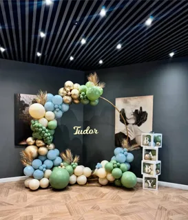
Fotografie a locației · Sursa fotografiei Cluj-Napoca · Hotel
Hotel Cristal (Boutique Hotel)
Hotel Cristal (Boutique Hotel). Hotelul Cristal combină restaurantul, parcarea proprie și o ofertă de evenimente private în Cluj-Napoca.
Strada Moldovei 17, 400380 Cluj-Napoca+40 364 736 706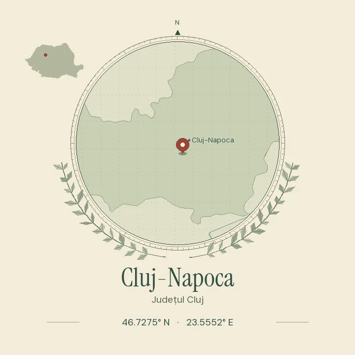
Hartă ilustrată Cluj-Napoca · Grădină
The Wild Garden
O mireasă care a ales The Wild Garden descrie o nuntă în grădină cu bufet suedez și preparate mai puțin obișnuite.
Drumul Sfântul Ioan 266, 400527 Cluj-Napoca+40 743 359 795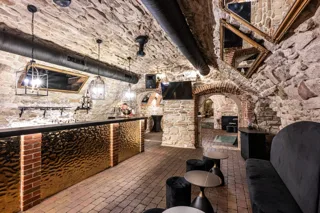
Fotografie a locației · Sursa fotografiei Cluj-Napoca · Local pentru evenimente
Dome 21 Events
Dome 21 Events. Familia care a ales Dome 21 pentru majoratul fiicei pune accent pe adresa centrală din Cluj și pe comunicarea directă cu proprietarii.
Bulevardul Eroilor 21, 400129 Cluj-Napoca+40 754 582 177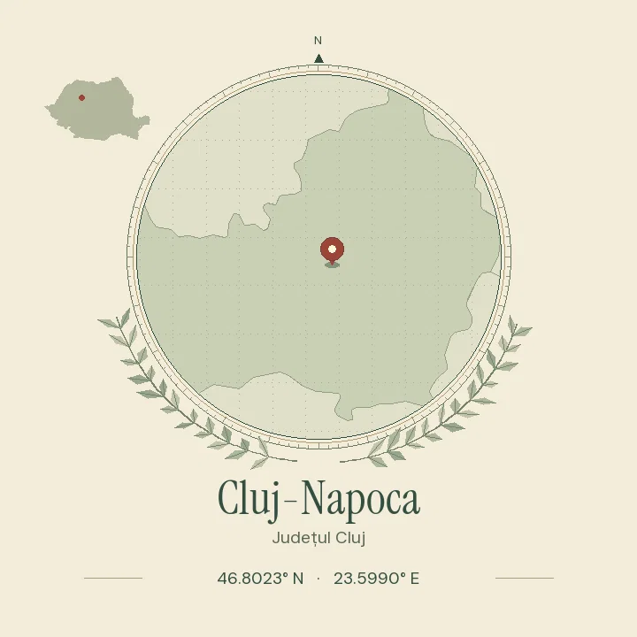
Hartă ilustrată Cluj-Napoca · Centru de recreere
Upplace
Un participant de la Upplace povestește despre reguli de muzică pe care le-a înțeles altfel înainte și după achitarea chiriei.
Strada Odobești 59, 400268 Cluj-Napoca+40 728 135 827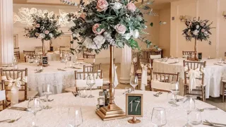
Fotografie a locației · Sursa fotografiei Cluj-Napoca · Local pentru evenimente
Chic Garden
Sală modernă și luminoasă la 15 minute de centrul Clujului, lăudată de miri pentru mâncare și prăjituri. Singura rezervă din recenzii: DJ-ul casei.
RG5G+C8, Cluj-Napoca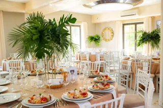
Fotografie a locației · Sursa fotografiei Cluj-Napoca · Local pentru evenimente
Wonderland
La Wonderland, o decizie pe care o puteți lua încă de la vizită este ce ar trebui să se vadă în spatele vostru la cununia religioasă.
PHCQ+7J, 407270 Cluj-Napoca+40 740 966 337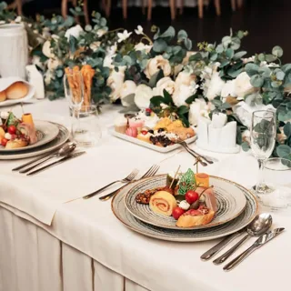
Fotografie a locației · Sursa fotografiei Cluj-Napoca · Local pentru evenimente
Clujana Festa
Salon de până la 320 de persoane și cununie în grădină pe Tăbăcarilor, în Cluj-Napoca. Ce laudă mirii și ce să întrebi despre ceremonia în aer liber.
Str. Tăbăcarilor 15 C, 400139 Cluj-Napoca+40 722 111 161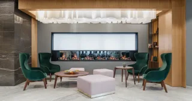
Fotografie a locației · Sursa fotografiei Cluj-Napoca · Hotel
Hotel River Park
Hotel River Park. Dacă vă pregătiți în Cluj și vreți primele portrete lângă apă, mergeți pe terasă înainte de a fixa ora cu fotograful.
Bulevardul 1 Decembrie 1918 Nr 120A, 400394 Cluj-Napoca+40 770 812 578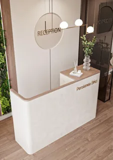
Fotografie a locației · Sursa fotografiei Cluj-Napoca · Pensiune
Pensiunea Brici
Pensiunea Brici. La Brici, un apartament cu două camere a însemnat pentru niște vizitatori și un balcon, un frigider și aer condiționat.
Strada Porumbeilor 19, 400057 Cluj-Napoca+40 744 539 046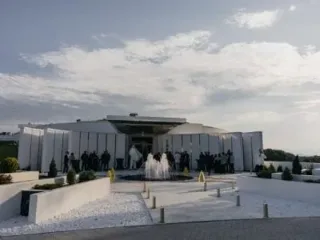
Fotografie a locației · Sursa fotografiei Cluj-Napoca · Centru de evenimente
Elitis Events Center - Sala De Evenimente Cluj
Elitis Events Center - Sala De Evenimente Cluj. La Elitis, numele sălii contează atunci când cereți o ofertă sau căutați fotografii de la alte petreceri.
Strada Făgetului 74, 400497 Cluj-Napoca+40 727 221 177Fotografie a locației · Sursa fotografiei Cluj-Napoca · Local pentru evenimente
Bolero Events
Salon de până la 400 de persoane în Ciurila, lângă Cluj, fără coloane și cu draperii opace: ce povestesc mirii și ce să întrebați.
Comuna Ciurila sat Ciurila, nr. 140, 407230 Cluj-Napoca+40 741 315 005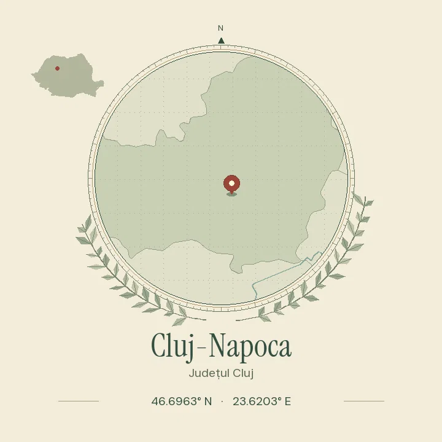
Hartă ilustrată Cluj-Napoca · Local pentru evenimente
RustiQ Garden
RustiQ Garden, Cluj-Napoca. La data vizitei, ușile i s-au părut greu de încuiat, iar lumina de la senzor se stingea repede.
DN1 10, 400129 Cluj-Napoca+40 744 709 080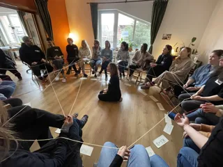
Fotografie a locației · Sursa fotografiei Cluj-Napoca · Local pentru evenimente
play:space cluj - Spatiu Evenimente
play:space cluj - Spatiu Evenimente. Dacă vă place ideea unei reuniuni pregătite de voi, faceți inventarul exact cu proprietarul înainte de cumpărături.
Calea Moților 102, 400370 Cluj-Napoca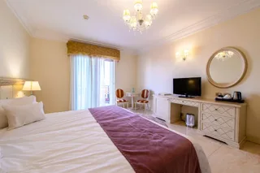
Fotografie a locației · Sursa fotografiei Cluj-Napoca · Hotel
Grand Hotel Italia
Hotel mare în Cluj-Napoca, cu spa, piscină și restaurant italian; un fotograf laudă echipa de evenimente, dar oaspeții spun că a îmbătrânit.
Str. Vasile Conta 2, 400478 Cluj-Napoca+40 364 111 333Fotografie a locației · Sursa fotografiei Cluj-Napoca · Hotel
DoubleTree by Hilton Cluj - City Plaza
Un sejur povestit de o familie la City Plaza aduce în discuție micul dejun și piscina, două lucruri care pot conta pentru cei rămași în Cluj după petrecere.
Strada Sindicatelor 9-13, 400029 Cluj-Napoca+40 264 450 101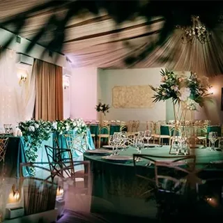
Fotografie a locației · Sursa fotografiei Cluj-Napoca · Sală de nunți
Imperial Ballroom
Un cuplu care și-a ținut nunta la Imperial Ballroom pune alături în relatarea sa mâncarea, servirea și felul în care echipa a aranjat sala.
Strada Timișului 3, 400394 Cluj-Napoca+40 792 346 966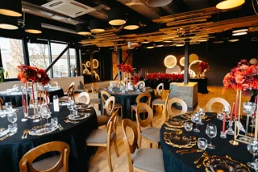
Fotografie a locației · Sursa fotografiei Cluj-Napoca · Local pentru evenimente
Fabrica Restaurant & Events
Restaurant de evenimente în Cluj-Napoca cu terasă pe acoperiș pentru cununii civile; clienții laudă DJ-ul casei și organizarea.
Strada Tudor Vladimirescu 22, 400225 Cluj-Napoca+40 729 066 203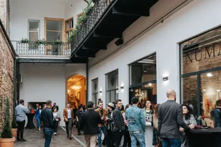
Fotografie a locației · Sursa fotografiei Cluj-Napoca · Local pentru evenimente
NUMAÀ SALĂ EVENIMENTE
NUMAÀ SALĂ EVENIMENTE, Cluj-Napoca. Parcarea pe care o amintește un client la NUMAÀ se afla vizavi și era contra cost.
Piața Unirii 24, 400394 Cluj-Napoca+40 751 102 070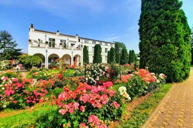
Fotografie a locației · Sursa fotografiei Cluj-Napoca · Bed & Breakfast
Pensiunea Cluj
Un vizitator la Pensiunea Cluj descrie micul dejun în regim de bufet, camerele spațioase și disponibilitatea gazdelor.
Str. Meteor 71B, 400492 Cluj-Napoca+40 741 369 403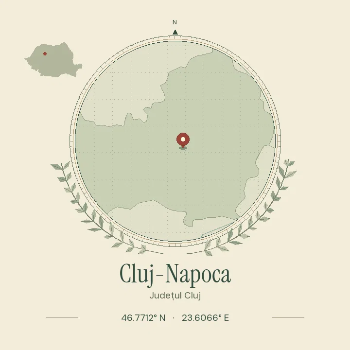
Hartă ilustrată Cluj-Napoca · Bed & Breakfast
Cazare Pensiune Cluj Napoca - Pensiunea Max
B&B în Cluj-Napoca cu parcare proprie și mic dejun inclus, dar cu recenzii recente critice la curățenie: vezi camerele înainte să rezervi.
Strada General Traian Moșoiu 64, 400132 Cluj-Napoca+40 748 890 172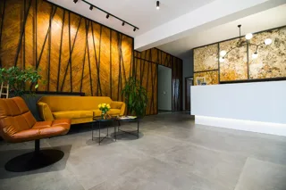
Fotografie a locației · Sursa fotografiei Cluj-Napoca · Pensiune
Pensiunea Casa Boca
Pensiunea Casa Boca, Cluj-Napoca. Cere să vezi dacă mobilierul rămâne acolo și după sosirea tuturor invitaților.
Campului St 197A, 400686 Cluj-Napoca+40 720 600 579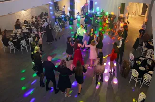
Fotografie a locației · Sursa fotografiei Cluj-Napoca · Local pentru evenimente
Transilvania Events Hall
O persoană care a vizitat Transilvania Events Hall vorbește atât despre servirea preparatelor, cât și despre muzica auzită în sală.
Calea Turzii 203A, 400066 Cluj-Napoca+40 772 042 153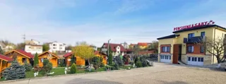
Fotografie a locației · Sursa fotografiei Cluj-Napoca · Hotel
Pensiunea Gaby
Pensiunea Gaby, Cluj-Napoca. Oaspeții își amintesc că au stat în căsuțe și că au avut contact direct cu gazdele.
Strada Făgetului 9A, 400497 Cluj-Napoca+40 755 146 794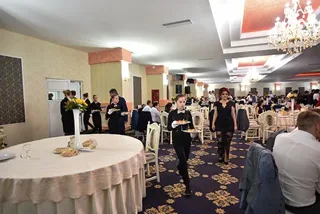
Fotografie a locației · Sursa fotografiei Cluj-Napoca · Sală de nunți
Bistro Ballroom Center
Când stabiliți mesele la Bistro Ballroom Center, localizați gurile de ventilație înainte să repartizați bunicii sau copiii.
Strada Bobâlnei 66, 400394 Cluj-Napoca+40 745 588 257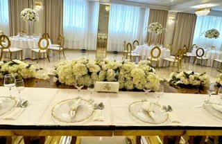
Fotografie a locației · Sursa fotografiei Cluj-Napoca · Local pentru evenimente
Sala de evenimente Royal Diamond
Sala de evenimente Royal Diamond, Cluj-Napoca. A revenit pentru felul în care a găsit accesul și pentru sala pe care a considerat-o încăpătoare.
Strada Corneliu Coposu 172, 400228 Cluj-Napoca+40 755 106 645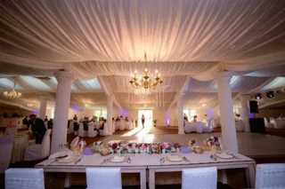
Fotografie a locației · Sursa fotografiei Cluj-Napoca · Local pentru evenimente
Caruso
Sală de nunți în Cluj-Napoca cu grădină pentru ceremonii și bar de cocktailuri. Meniul e comparat cu unul de restaurant cu stea. Ce să verifici.
Unnamed Road, 407280 Cluj-Napoca+40 755 701 247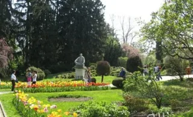
Fotografie a locației · Sursa fotografiei Cluj-Napoca · Bed & Breakfast
Pensiunea Popan
Pensiunea Popan, Cluj-Napoca. La Popan, un călător care pleca mai târziu cu trenul nu a putut lăsa bagajele după eliberarea camerei.
Strada Gheorghe Marinescu 9, 400394 Cluj-Napoca+40 740 004 534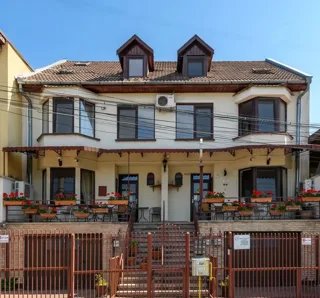
Fotografie a locației · Sursa fotografiei Cluj-Napoca · Pensiune
Pensiunea Colibri Cluj-Napoca
Pensiunea Colibri Cluj-Napoca. Un vizitator al pensiunii Colibri a văzut lacul de la fereastra camerei și spune că a ajuns repede pe jos la Iulius Mall.
Str. Între Lacuri 57, 400591 Cluj-Napoca+40 722 322 646Hartă ilustrată Cluj-Napoca · Hotel
Pensiunea Verona Centru
Pensiunea Verona Centru. Pentru rude venite la Cluj la ore diferite, posibilitatea de a-și pregăti ceva dimineața poate conta mai mult decât un meniu de grup.
Str. Republicii 54, 400347 Cluj-Napoca+40 757 194 599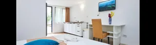
Fotografie a locației · Sursa fotografiei Cluj-Napoca · Bed & Breakfast
Pensiunea Mora
Pensiunea Mora, Cluj-Napoca. La Mora, un oaspete a primit camera înainte de ora obișnuită și a apreciat acest gest după sosirea în Cluj.
Strada Gheorghe Marinescu 94, 400337 Cluj-Napoca+40 728 962 445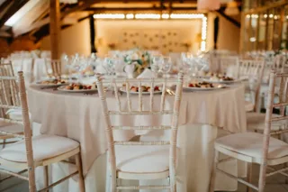
Fotografie a locației · Sursa fotografiei Cluj-Napoca · Restaurant cu specific european modern
Casa Boema
Restaurant în centrul Clujului cu grădină interioară și sală de evenimente; 4,3 din 3.468 de evaluări, botezuri reușite și o degustare de cerut.
Strada Iuliu Maniu 34, 400095 Cluj-Napoca+40 734 414 414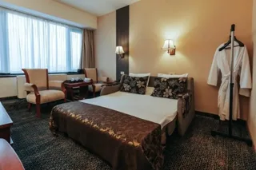
Fotografie a locației · Sursa fotografiei Cluj-Napoca · Hotel
Grand Hotel Napoca
Un oaspete de la Grand Hotel Napoca povestește că a găsit parcare gratuită ca persoană cazată și că a putut lua la hotel toate mesele, inclusiv prânzul și cina.
Strada Octavian Goga 1, 400698 Cluj-Napoca+40 264 580 715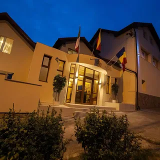
Fotografie a locației · Sursa fotografiei Cluj-Napoca · Bed & Breakfast
Pensiunea Selin
Pensiunea Selin, Cluj-Napoca. Un oaspete spune că în timpul șederii sale, la parter a avut loc un majorat și muzica se auzea în cameră.
Strada Corneliu Coposu 172, 400228 Cluj-Napoca+40 755 106 645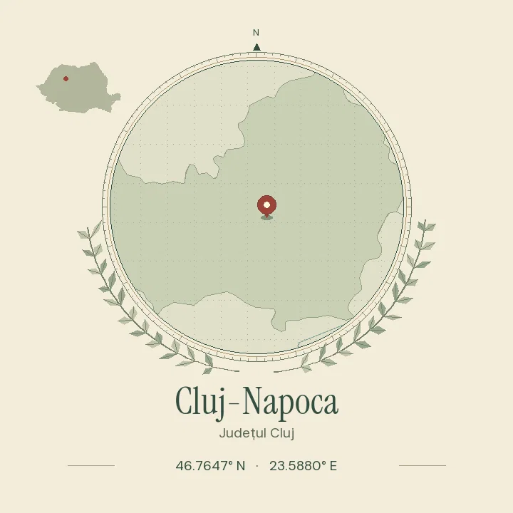
Hartă ilustrată Cluj-Napoca · Pensiune de familie
Pensiunea Vidalis
Pensiunea Vidalis, Cluj-Napoca. Un oaspete de la Vidalis pune preț pe poziția centrală și pe apropierea de clinicile din Cluj-Napoca.
Str. Republicii nr 25, 400015 Cluj-Napoca+40 729 362 469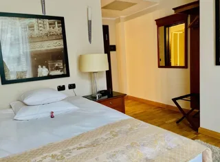
Fotografie a locației · Sursa fotografiei Cluj-Napoca · Hotel
Hotel Paradis
Hotel Paradis. Un oaspete cazat la Paradis a apreciat că a putut regla temperatura în cameră și că personalul de la recepție l-a ajutat pe parcursul șederii.
Strada Ciocârliei 47, 400619 Cluj-Napoca+40 264 413 940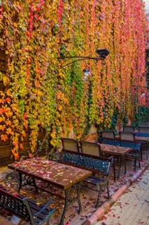
Fotografie a locației · Sursa fotografiei Cluj-Napoca · Restaurant eclectic
Enigma Restaurant
Restaurant eclectic cu grădină și terasă în centrul Clujului, 4,2 din 3.522 de evaluări. Recenziile din 2026 reclamă servire lentă.
Strada Iuliu Maniu 12, 400089 Cluj-Napoca+40 752 104 642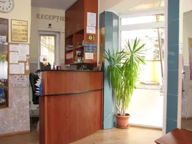
Fotografie a locației · Sursa fotografiei Cluj-Napoca · Bed & Breakfast
Pensiunea Paris
La Pensiunea Paris, un oaspete descrie dificultatea de a aprecia cât spațiu trebuie să lase liber pe trotuar atunci când parchează lângă clădire.
Strada Paris 105, 400394 Cluj-Napoca+40 755 067 766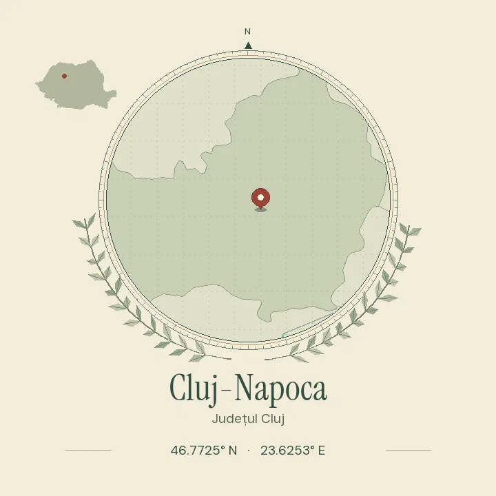
Hartă ilustrată Cluj-Napoca · Restaurant
Iconic Garden
Iconic Garden. Dacă aduceți un tort sau un furnizor de cafea, clarificați înainte ce produse din exterior sunt acceptate și în care zonă.
Strada Alexandru Vaida Voevod 53B, 400592 Cluj-Napoca+40 746 304 291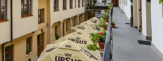
Fotografie a locației · Sursa fotografiei Cluj-Napoca · Hotel
Transilvania
Terasa de vară a hotelului Transilvania din Cluj propune meniuri românești și mese pentru cel mult o sută de persoane.
Strada Regele Ferdinand 20, 400110 Cluj-Napoca+40 264 594 429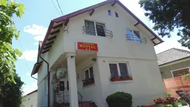
Fotografie a locației · Sursa fotografiei Cluj-Napoca · Hotel
Pensiunea Mioval
Pensiunea Mioval, Cluj-Napoca. Dacă familia vine înainte de nuntă și pleacă la date diferite, cere o rezervare defalcată pe camere și nopți.
Strada Partizanilor, 407055 Cluj-Napoca+40 264 435 858Hartă ilustrată Cluj-Napoca · Bed & Breakfast
Cazare Pensiune Cluj Napoca
Pensiune pe Strada Moldovei din Cluj-Napoca, cu media 3,3: recenziile reclamă camere la subsol, baie comună și ușa încuiată seara.
Strada Moldovei, 400000 Cluj-Napoca
Întrebări despre locațiile din Cluj-Napoca
Unde pot dormi invitații în Cluj-Napoca?
În registrul de cazare SITUR găsim Hotel Cristal (Boutique Hotel) (48 de locuri de cazare), Wonderland (42 de locuri de cazare), Hotel River Park (52 de locuri de cazare). Verifică ce camere sunt libere pentru noaptea evenimentului.
Ce spații sunt documentate pentru evenimente în aer liber în Cluj-Napoca?
Wonderland — Cununie religioasă pe ponton sau în capela deschisă. Clujana Festa — Ceremonie în grădină. Fabrica Restaurant & Events — Cununie civilă pe acoperiș.
Care locație din Cluj-Napoca are cele mai multe evaluări Google?
Wonderland are 8.972 de evaluări în profilul Google folosit la documentare. Evaluările acoperă și alte experiențe la proprietate, inclusiv vizitele fără eveniment.
Unde apare o intrare accesibilă în Cluj-Napoca?
Profilurile Google indică o intrare accesibilă la The Wild Garden, Upplace, Wonderland. Pentru o cununie în exterior, cere detalii despre traseul dintre intrare și zona cu scaune.
Vizionări în apropiere
- Feleacu · 2 locații. Între RustiQ Garden și Grace Venue sunt 0,5 km în linie dreaptă.
- Florești · 1 locație. Între Caruso și La Foret sunt 2,7 km în linie dreaptă.
- Pruniș · 1 locație. Între Bolero Events și Conacul din Pruniș sunt 3,0 km în linie dreaptă.